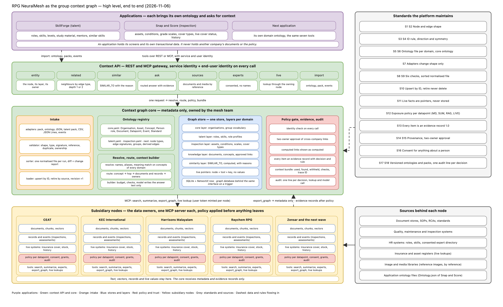

Every RPG company knows things the others could use: how CEAT stores rubber, what KEC learned on an overseas project, how Harrisons spots latex going bad. NeuralMesh lets a person or an application in one company find and use that knowledge, while each company keeps full control of what leaves its walls.
What happens without a shared context graph.
| Situation | What happens today | Cost |
|---|---|---|
| A Harrisons estate manager wants to cut latex spoilage | Does not know that CEAT trends lot quality per supplier at receipt and has written it down | The same lesson is learned twice, months apart |
| A learner in SkillForge needs study material for quality management | Material lives in four companies in four formats, and nobody can say which is current | Learning plans built on what one person happened to know |
| An inspector in Snap and Score grades a tyre bulge | No link to the standard it is graded against, to similar defects elsewhere, or to whether the asset is insured | Grades differ by inspector, claims are slow |
| Group leadership asks "who in the group knows acquisition integration" | An email round, answers in days, names shared without consent | Decisions wait, privacy rules are bent |
| Each application builds its own knowledge base | SkillForge, Snap and Score and the next one each copy data and each invent a vocabulary | Three copies of the same facts, drifting apart, each with its own access rules |
| A company shares a document once | It is copied, forwarded and never retired. The company loses control of it | Companies stop sharing |
A question goes to the companies that hold an answer, each company decides what may leave for this person and this purpose, and the mesh returns an answer built only from what came back, with its sources.
A company lists what it holds in named catalogue items (for example "materials handling learnings", "expert directory", "inspection records") and sets a rule for each: title only, summary, full text, or looked up live. The documents stay on the company's own node.
From every catalogue the mesh builds one graph: topics with their other names, skills, roles, assets, standards, document titles, and the links between them. It holds no document text and no person's name.
The question comes with who is asking and why: problem solving, learning, career mobility, inspection. The purpose matters, because a company may allow a summary for learning and nothing for a commercial question.
The question is matched to topics by name, by other names, and by meaning when the wording differs. The map says which companies hold something on those topics. The question goes only there.
The company's node applies its own rules to each item, for this person and this purpose, and returns what it allows. A held-back item comes back as a title with the reason, so the asker knows it exists and can request access.
The returned items are fitted into a fixed space, the most relevant first. An assistant writes the answer from those items alone. Seven checks run on the result: no invented sources, no content from a held-back item, no leaked test strings, nothing longer than the evidence supports.
Because every application uses the same map, the answer can show what is near: skills that go with this one, similar defects in another company, documents that corroborate or contradict each other, people who know the topic (without names until an introduction is approved).
Each decision, lookup and answer is written to an audit with one trace number. A company can change a rule or retire an item, and the next question respects it. Nothing shared is ever copied out of the mesh's control.
Applications ask. The mesh knows where to ask and answers with evidence. The companies hold the data and decide.
The arrows from the mesh to the companies carry the question and the asker's identity. The arrows back carry only what each company released.
Step 4 is the one that keeps control with the owner. It runs inside each company, on the company's own rules.
A topic sits once in the map. Talent, knowledge, inspection and people all link to it, which is what makes "similar" and "also see" possible across applications.
Applications on top ask through one context API. The core in the middle holds the map, the rules and the audit. The company nodes at the bottom hold the data and decide. The standards column lists what every part follows.

Purple: applications. Green: the context API and the core. Orange: intake of vocabularies and data. Blue: the graph store and its layers. Red: policy, evidence and audit. Yellow: the company nodes. Grey: the standards and the sources behind each node. A dashed arrow is data or rules flowing in.
What changes in their day.
| Who | Before | With NeuralMesh |
|---|---|---|
| An employee with a problem | Asks around, finds what one colleague remembers | Asks once, gets the practices the group has written down, with sources and with the items that exist but are held back |
| A learner in SkillForge | Study material chosen by hand, often outdated | Material matched to the skill and the level, from the company that owns it, current version only, read by reference so nothing is copied |
| An inspector in Snap and Score | Grades from memory, no view of standards or similar cases | The asset's conditions, grade scale and standards in one profile, similar defects elsewhere, insurance status looked up live |
| A subsidiary head | Sharing means losing control, so sharing stops | Shares by rule, per catalogue item, per purpose, sees every access in the audit, can withdraw at any time |
| Group leadership | Cross-company knowledge found by email rounds | Questions across the group answered in seconds with evidence, experts found by skill without exposing names, gaps between companies visible as links one company can fill for another |
| An application team | Builds and maintains its own knowledge store and access rules | Adds its vocabulary to the map, calls seven standard tools, inherits every sharing rule on day one |
| IT security and compliance | Copies of documents in several systems, access rules in each | Data stays at the owner, one rule per catalogue item, one audit line per decision, consent recorded for anything about a person |
These rules do not change when an application changes. They are what the companies agree to.
| Rule | Plain meaning | Who it protects |
|---|---|---|
| Data stays with its owner | Documents, records, vectors and personal data stay inside the company's node. The mesh holds names, links and owners | The subsidiary |
| One sharing rule per catalogue item | Title only, summary, full text, or live lookup. Plus the purposes it is allowed for and a ceiling that no request can pass | The subsidiary |
| The purpose is part of every question | Problem solving, learning, career mobility, inspection. The same item can be open for one and closed for another | The subsidiary, the asker |
| Held-back items are visible as titles | The asker learns that something exists and why it is held back, and can request access from the owner | The asker |
| Links between companies need both owners | A link that says "CEAT's practice fills Harrisons' gap" is shown only after both companies approve it | Both subsidiaries |
| Computed is marked computed | A similarity the system worked out is shown as such, with its reason, and is never shown as a fact a person approved | The asker |
| Nothing about a person without consent | Experts appear by role and skill. A name is released only after the owning company approves an introduction | The person |
| Live facts are never stored | Insurance status, stock, location: the mesh holds a pointer and asks the owner at the moment of the question | The subsidiary |
| Every item carries its evidence | Source, owner, the rule that allowed it, the time. An answer can always show where each line came from | Everyone |
| Retire, never delete | A withdrawn item stops appearing but stays in the record, so an audit can always say what the mesh held and when | Compliance |
| One audit line per decision | Who asked, for what, what each company decided, what the assistant was given, with one trace number through all of it | Compliance, the subsidiary |
| Versions are explicit | Vocabularies and catalogues carry a version and a date. An older document is marked superseded by the newer one | Everyone |
Three steps, the same for talent, inspection or a leadership view.
The application states the kinds of thing it talks about and how they relate. For inspection: assets, conditions, grade scales, cover types, and relations such as "asset is checked for condition". For talent: roles, skills, levels, and "role requires skill". Where a kind already exists in the map (a topic, a document, a company), the application uses it instead of inventing its own.
Lists of assets, roles or standards arrive as files, are checked against the vocabulary, and are loaded into the map under the application's own name. Items the companies have not yet confirmed enter as proposed and are approved by each company.
Seven tools cover every application: what is this thing, what is connected to it, what is similar, answer a question, which documents and images, which experts, look this up live. The application brings its own screens. It never brings its own copy of another company's data.
| Application | Its vocabulary | What it asks the mesh | What it gets back |
|---|---|---|---|
| SkillForge (talent) | Roles, skills, levels, study material, mentors | What does this role need, what material explains this skill at this level, who can mentor it, which skills are similar | Required skills with the topics behind them, current material by reference, consented experts without names, similar skills with the reason |
| Snap and Score (inspection) | Assets, conditions, grade scales, cover types, standards, inspections | What is this asset and how is it inspected, what standard applies, is it insured now, what similar defects exist elsewhere, what did past inspections find | The asset's profile, the standard documents the owner releases, the live cover status with its time, similar conditions with the reason, history the owner allows |
| A leadership view | Few new kinds. It reads what exists, with the purpose "leadership" and an aggregate rule at each company | Where does the group hold knowledge on a topic, which companies have a practice another lacks, who in the group can speak to it | Counts and titles per company, approved gap links, experts by role, nothing below the aggregate rule each company set |